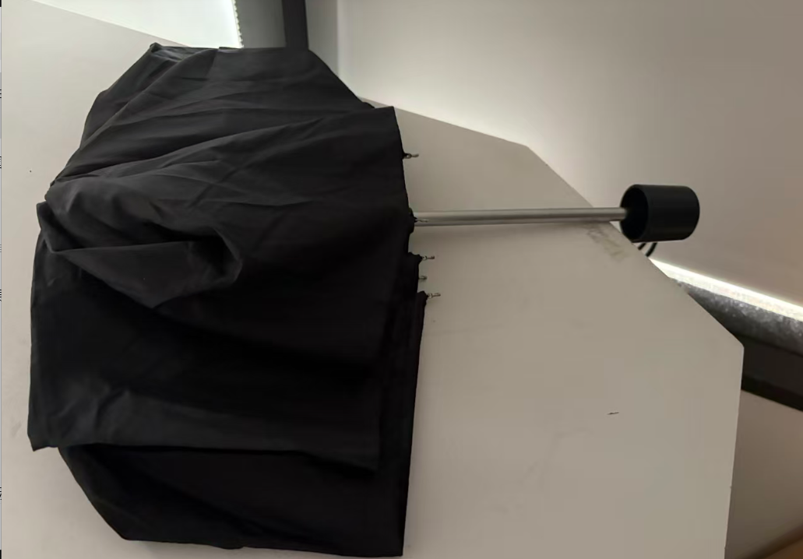
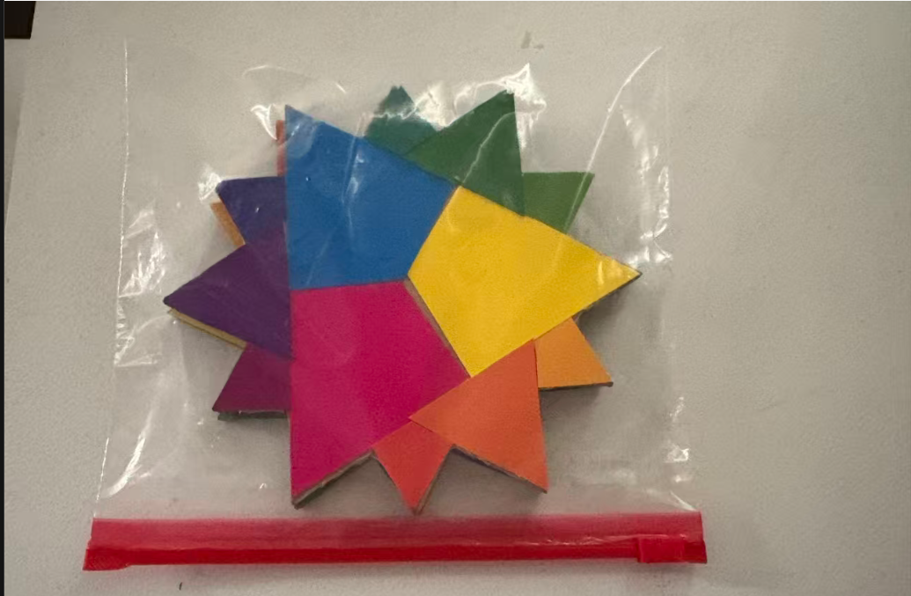
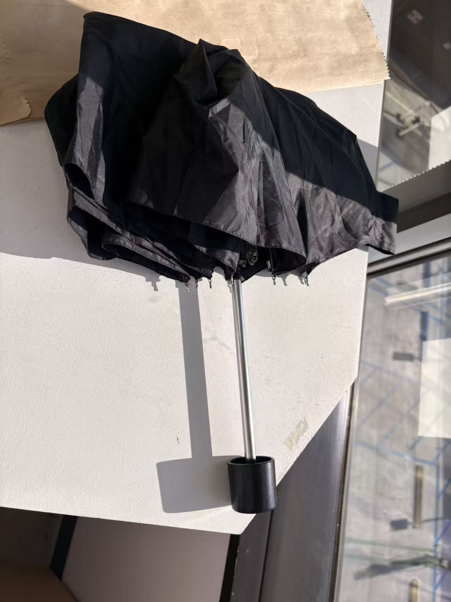
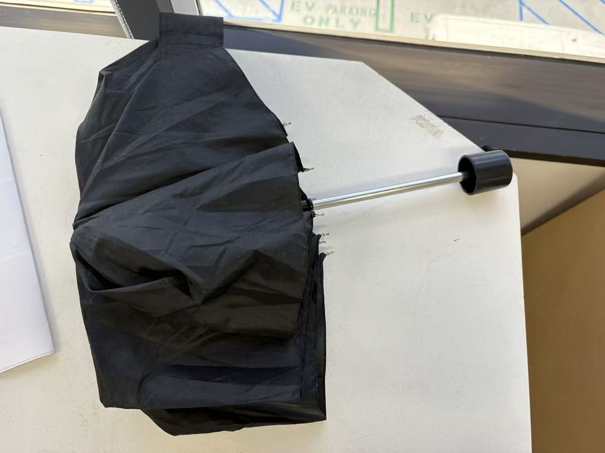
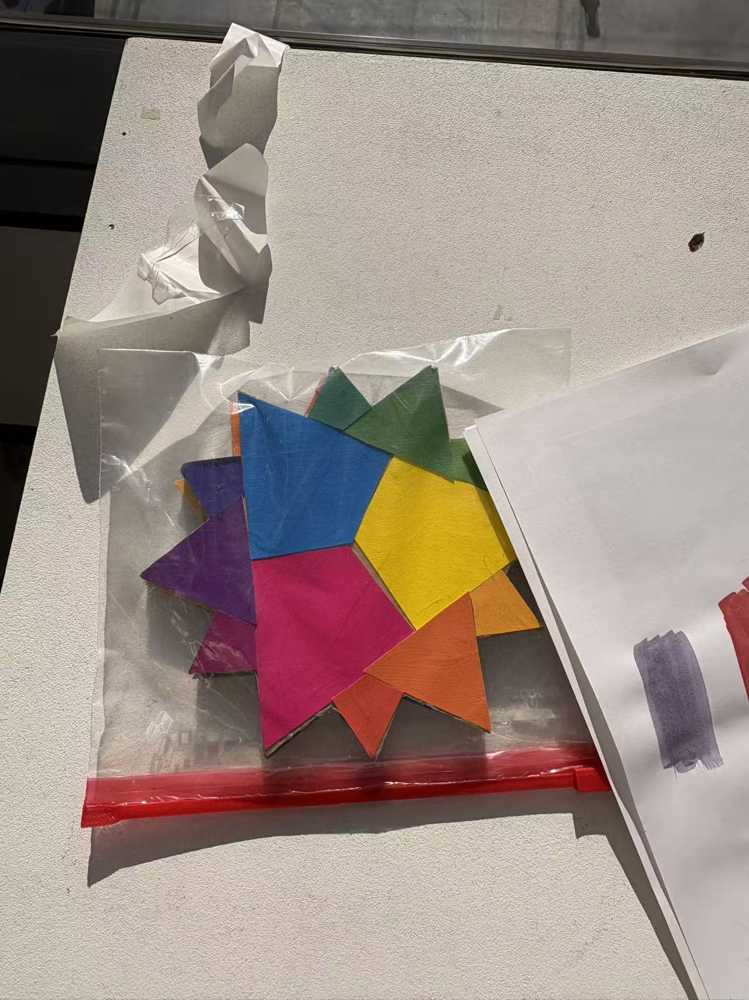

Overview
Day 1
Day 25
Day 28
Observation period: 28 days
Start Date: 2026.05.16
End Date: 2026.06.13
Record: 3 times


These two specimens were the first objects observed in this study, and they sustained the longest observation period of all. They appear to have been abandoned — or perhaps simply forgotten by their owners. For objects like these, it is difficult to imagine a more suitable destination than the trash.
On May 16, two lost objects were discovered in Room 204, Building 1111 — an umbrella and a wooden object, both left unattended with no owner in sight. The researcher initially assumed the umbrella, at least, would be claimed promptly. It is, after all, a practical item; someone would come back for it.
Neither object was retrieved. Both remained exactly where they were found. What was expected to be a brief observation has since extended far longer than anticipated.
Passing by the site on Day 25, the researcher briefly assumed the objects had finally been removed. The space looked different from a distance — cleared, ordinary. Upon closer inspection, however, both items were still there, exactly as they had been left. The assumption had been wrong.

By Day 28, it had become clear that no one was coming back for these objects. The observation period was formally concluded. A final photographic record was made of both specimens before the researcher made the decision that had been inevitable for some time.

